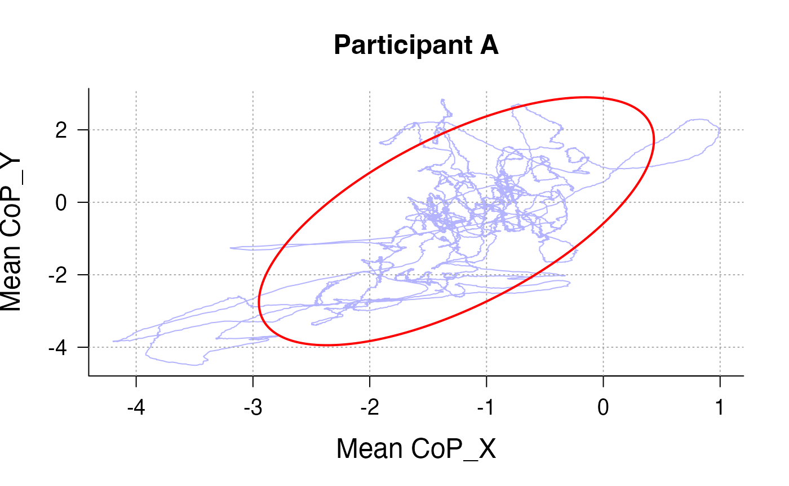
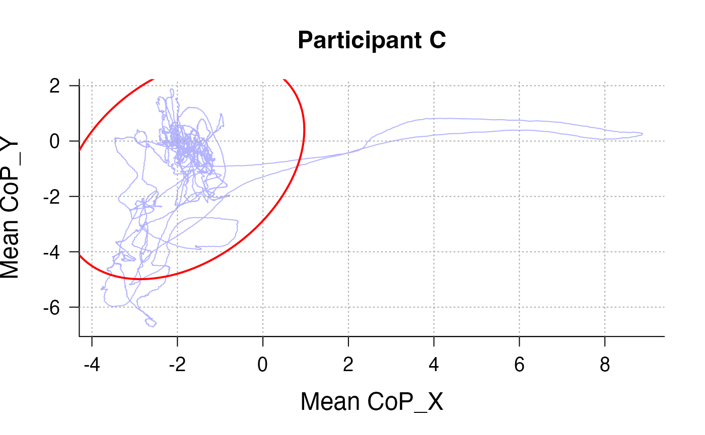
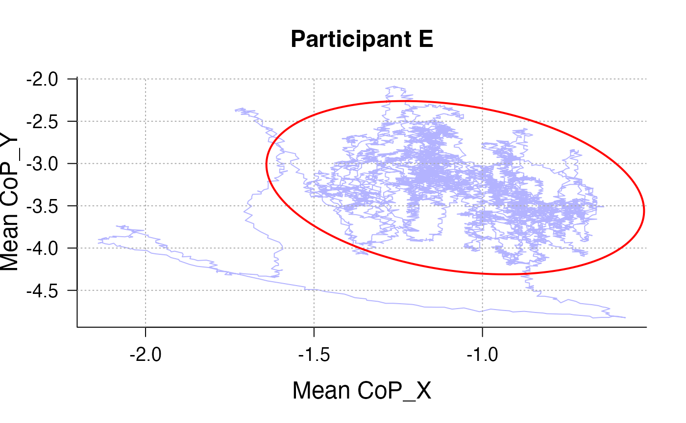
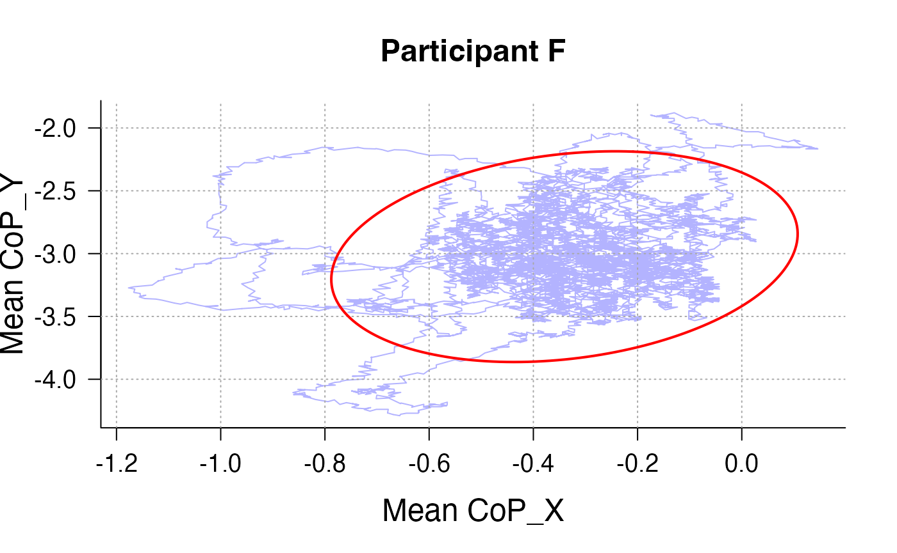
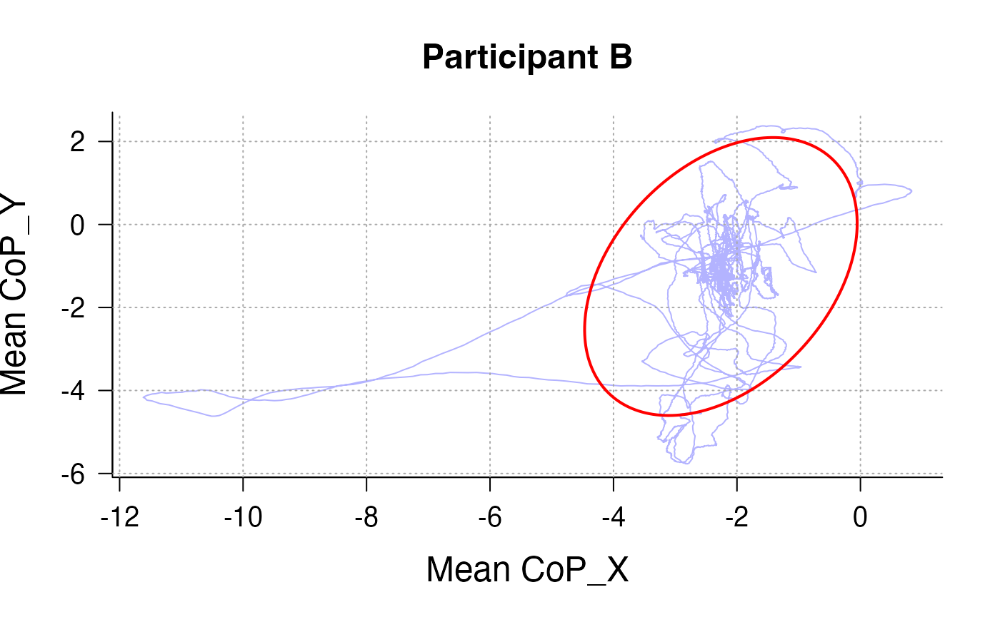
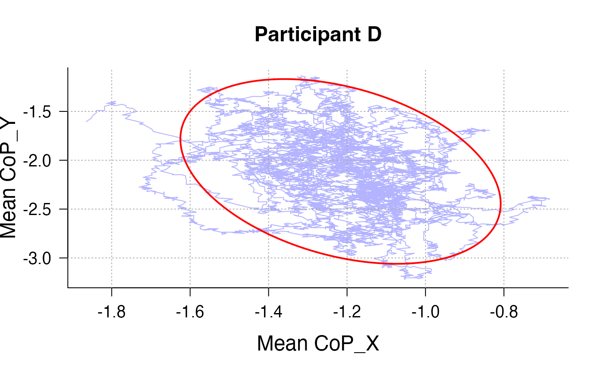

Visualise Stabilogram and Confidence Ellipse
Source:vignettes/SpaghettEllipse.Rmd
SpaghettEllipse.RmdIntroduction
During your exploration of postural data, you might be interested in visualising CoP displacements. This can be done using stabilograms that will display CoP displacements on the medio-lateral and antero-posterior axes.
Sometimes these plots are called “Spaghetti plots”, because they do look like spaghetti. However, it is important to note that spaghetti plots are also the names of other types of plots that - arguably - look slightly less like spaghetti.
The SpaghettEllipse command will output a spaghetti plot
coupled with the X% confidence ellipse area.
Example Usage
You collected the data of 6 participants who viewed passively pictures for 100 seconds with a sample rate if 100Hz. You now want to assess displacements for each participants.
Note: the files are stored as Rdata to reduce the size of the package – however the command only accepts txt files, hence it is required to first convert Rdata to text files before running the examples
# 1. Locate the installed extdata/ folder (contains only .RData now)
path_extdata <- system.file("extdata", package = "BalanceMate")
# 2. Find all .RData (case‐insensitive)
rdata_files <- list.files(
path_extdata,
pattern = "\\.[Rr][Dd]ata$",
full.names = TRUE
)
# 3. Convert each .RData to a .txt in a temp directory
tmpdir <- tempdir()
for (f in rdata_files) {
load(f) # e.g. loads object “Postural_DataA” into your session
nm <- tools::file_path_sans_ext(basename(f))
write.table(
get(nm),
file = file.path(tmpdir, paste0(nm, ".txt")),
sep = ",",
row.names = FALSE,
col.names = FALSE,
quote = FALSE
)
}
# 4. Merge from the tempdir
Data <- Merge_PosData(
directory_path = tmpdir,
SampleRate = 100,
SessionDuration= 100
)
SpaghettEllipse(Data, participant_id_col = "file_name", participant_id = "Postural_DataA.txt", Title = "Participant A")
SpaghettEllipse(Data, participant_id_col = "file_name", participant_id = "Postural_DataB.txt", Title = "Participant B")
SpaghettEllipse(Data, participant_id_col = "file_name", participant_id = "Postural_DataC.txt", Title = "Participant C")
SpaghettEllipse(Data, participant_id_col = "file_name", participant_id = "Postural_DataD.txt", Title = "Participant D")
SpaghettEllipse(Data, participant_id_col = "file_name", participant_id = "Postural_DataE.txt", Title = "Participant E")
SpaghettEllipse(Data, participant_id_col = "file_name", participant_id = "Postural_DataF.txt", Title = "Participant F")
Note: you can adjust the size of the
Ellipse by using the conf_level argument.
However, you might also be interested in a specific sample of those
displacements, say between the 10th second and the 90th second. This can
be done using the arguments time_col to specify the column
containing the time stamp for each data points, and the the
time_start and time_end arguments to indicate
the limits between which you want to plot your spaghetti.
#path_to_data <- system.file("extdata", package = "BalanceMate")
#Data <- Merge_PosData(path_to_data, SampleRate = 100, SessionDuration = 100)
SpaghettEllipse(Data, participant_id_col = "file_name", participant_id = "Postural_DataA.txt", time_col = "Time", time_start = 10, time_end = 90, Title = "Participant A")
SpaghettEllipse(Data, participant_id_col = "file_name", participant_id = "Postural_DataB.txt", time_col = "Time", time_start = 10, time_end = 90,Title = "Participant B")
SpaghettEllipse(Data, participant_id_col = "file_name", participant_id = "Postural_DataC.txt", time_col = "Time", time_start = 10, time_end = 90,Title = "Participant C")
SpaghettEllipse(Data, participant_id_col = "file_name", participant_id = "Postural_DataD.txt", time_col = "Time", time_start = 10, time_end = 90,Title = "Participant D")
SpaghettEllipse(Data, participant_id_col = "file_name", participant_id = "Postural_DataE.txt", time_col = "Time", time_start = 10, time_end = 90,Title = "Participant E")
SpaghettEllipse(Data, participant_id_col = "file_name", participant_id = "Postural_DataF.txt", time_col = "Time", time_start = 10, time_end = 90,Title = "Participant F")
But you might also prefer to plot more complex sway paths. For instance, if your session contains unpleasant trials and pleasant trials, you might want to compute average sway paths across all participants across all unpleasant trials to compare it to average sway paths across all participants across all pleasant trials. This can be done with a little bit of effort and data wrangling as can be seen in the dedicated subsection of the Balance mate guide book.
Further readings
See the the subsection on Visualisation in the Balance mate guide book.